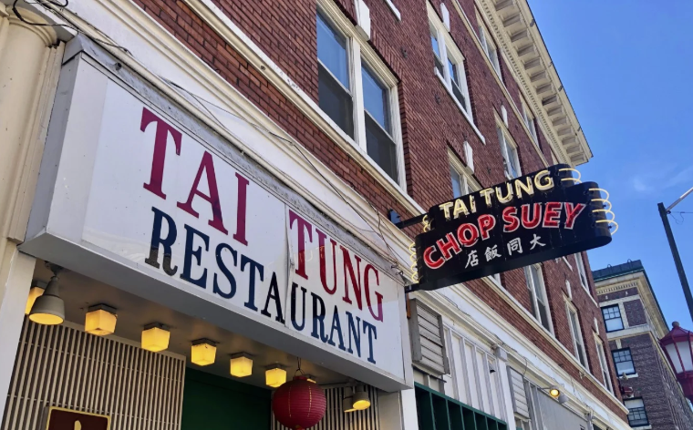

Find something to share
Make sure to use the menu's filter to look at noodles, seafood, and other dishes. Each featured dish has a photo to help you decide, but the resturant looks and smells better!
View the menu
Seattle's Chinatown-International District
Welcome to Tai Tung, which is an old family-run Chinese restaurant on South King Street, in Seattle WA. Come by for lunch or dinner, bring friends or family. Even pick up something to share at home!
I would hope to come with a few friends and let everyone choose choose one dish for the table. That way you can eat family style and still get to try a little of everything.
Make sure to use the menu's filter to look at noodles, seafood, and other dishes. Each featured dish has a photo to help you decide, but the resturant looks and smells better!
View the menuSee what Bruce Lee used to order and what I'd pick for a meal with friends.
See the favoritesIf you don't want to dine in, pick out which dishes you want and call!
Call (206) 622-7372If you have time before lunch, I would walk along South King Street and stop at a shop that catches your eye. On your way to Tai Tung, look up for the neon Chop Suey sign above the entrance. It is great for a instagram photo!
Read about Tai Tung's history →Open daily from 11 a.m. to 7:30 p.m.
Get directions and visiting details →